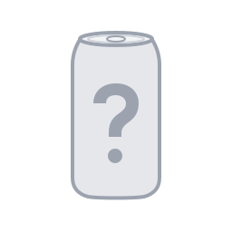

Discover
Find new flavors, search the archive, or scan a barcode to find a match.
Discover new flavors, keep track of what you've tried, and save the ones you want to try.

Illustrative preview · Sample drinks
Find new flavors, search the archive, or scan a barcode to find a match.
Remember what you've tried and save the drinks you want to find next.
Rate what you drink, leave a few notes, and see what other people think.
Can't find a drink? Add it in the app, share a photo, or suggest a correction. Submissions are reviewed before they appear publicly.
IN TESTING
CanArkiv is in pre-release testing. We're fixing bugs, adding drinks, and refining the experience before a wider launch. Download links will appear here when they're available.